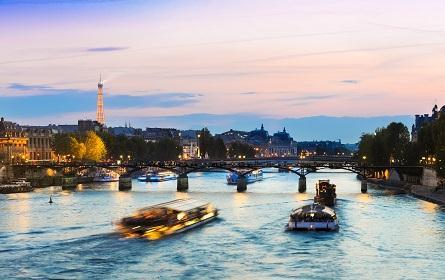

- 
To travel from one place to another for different purposes is generally called travelling. People do not travel always for the same purposes. Someone travels to gain knowledge and experience, someone travels for pleasure, someone travels for business purposes etc. It has much educative value. It is a part of education. Our education and book knowledge remain imperfect without travelling. We can learn many things from travelling. It teaches us to trade and commerce, language, sociology, customs, culture, history, geography and so on. Therefore, the educative value of travelling beggars description. Besides this, there are some special benefits of travelling. If a man stays in one place for a long time, he becomes monotonous. Travelling removes our monotony and gives pleasure. It also broadens our outlook and refreshes our mind. A good traveller can easily educate others. He can give us first-hand knowledge of men and matters of another country. I like travelling very much
Travelling is an important way to gain knowledge and acquire education. It gives the first-hand knowledge to the traveler and the books give the second-hand knowledge. Bookish knowledge can be had from reading books the and practical knowledge can be had from traveling. Hence traveling In regarded as a part of education. During traveling a traveler visits different places both historical and general and comes in touch with people of different regions, faiths, customs, and languages.